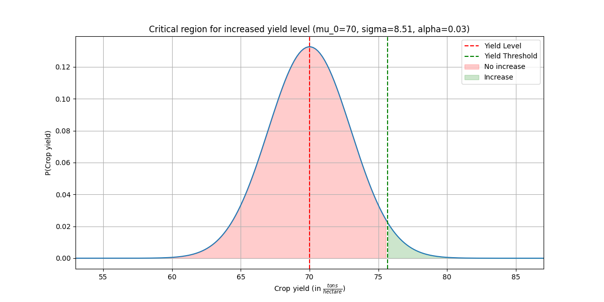
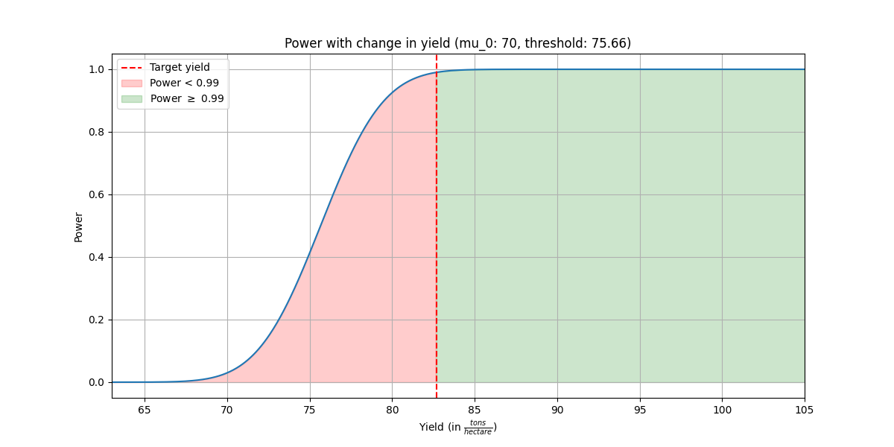
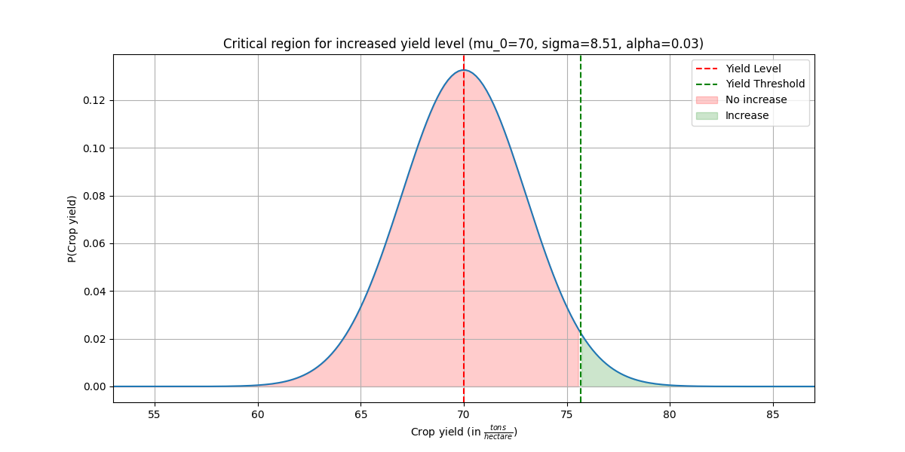
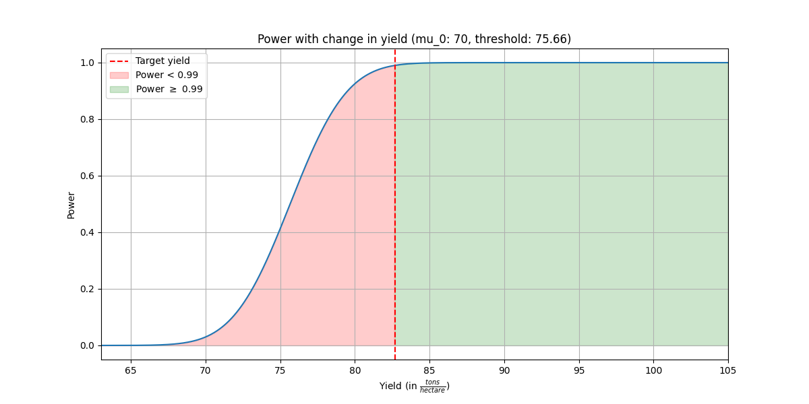

Assignment 2 (15 + 15 Points)
The goal of this assignment is to get a better understanding of hypothesis testing.
Deadline
The deadline for this assignment is on January 8th, 2024 at 23:59. This is a hard deadline, therefore, no late submissions will be accepted.
You submit your assignment in the TeachCenter. Multiple submissions are allowed, so you can submit your code as often as you want. The last submission before the deadline will be graded; we have no access to previous versions.
Submission Files
When you have completed the assignment, you will submit exactly two files:
assignment2.py: This file contains all the code for the 2 tasks.assignment2.pdf: This file contains your report.
Do not submit any other files. Make sure you use Python version ≥3.10.
Important: Please make sure that your uploaded file is named assignment2.py and assignment2.pdf.
Doing otherwise will lead to point deductions!
Report
Regarding the submission of your report (assignment2.pdf) file:
- Make sure that the report is a maximum of 5 A4 pages long.
- Only use A4 pages in portrait format.
- Don’t copy the assignment description in the report
- Label your answers with the task number.
- Only relevant information should be included in the report (numerical results, plots and discussion).
- Since this is a technical report, use a uniform formatting, e.g. uniform font style, size, color and keep your textual answers short and concise.
- Plots should contain correct labels for title and axes.
- No handwritten reports will be accepted!
There will be deductions (up to 100% of the report) if the submitted report deviates significantly from the listed guidelines.
We recommend using either , MS Word or Google Docs for writing the report. No template will be provided.
Assistence
Please use the Assignment 2 - Forum section in the TC to ask questions regarding the tasks. Link to the forum: Assignment 2 - Forum
Plagiarism
By submitting your work, you agree that plagiarism tools will process your work.
You are allowed to discuss your homework with colleagues, but you are not allowed to jointly work on the homework, copy solutions, or share the code of your project with other groups!
Allowed Packages
Only use the already imported packages in the assignment template. Additional ones will not be available in our testing environment. If you really need additional packages (which shouldn’t be the case), request it in the forum.
Point Distribution
The points for the individual tasks are given by (code + report), where code = points for the code and report = points for the report.
For example, the task Z-Test - a) Hypothesis Definition gives (0+2). This means the task is worth 0 points in code and 2 points for the report.
Tasks
Important: Please include all numerical results and plots in your report. The plots should be labelled accordingly with title and axes labels!
1. Z-Test - Crop Yield (10+9)
Suppose a group of farmers want to determine if a new fertilizer increases the average yield of a crop beyond a certain yield level of tons per hectare. They set up an experiment across n fields with the new fertilizer. They know that there exists a normal measurement error for the final reported crop yield due to various reasons like rounding, estimation, missreporting.
Let be the average yield (in tons) of the n fields. The farmers’ default assumption is that the new fertilizer is not increasing the average yield.
a) Hypothesis Definition (0+2)
Describe the above story in the context of statistical hypothesis testing. Are the most natural null and alternative hypotheses simple or composite?
b) Threshold Determination (3+1)
The farmers want to set a threshold on for identifying fields with increased yield, so that no more than 5% of the fields are incorrectly identified as having an increased yield due to the fertilizer.
- task_hypothesis_threshold: With your statistical hypotheses definition from above, determine the threshold the farmers should set when using n = 8 fields. Use a yield level of 40 tons and draw from .
- task_hypothesis_threshold_plot: Plot a graph illustrating your reasoning.
Example, how your graph could look like for this task (Caution: The values in this graph differ from the given assignment values):

c) Power Analysis I (4+1)
- task_power: What is the power of the test if the true average yield increase is 15% above the threshold (=)?
- task_nr_of_fields: How many fields need to be tested to achieve a power of 0.9 with a significance level of 0.05?
- Don’t forget to round the number up (ceil) to the next integer because only whole fields can be tested.
d) Power Analysis II (3+1)
- task_yield_for_power: Plot the power of the test with n = 8 fields as a function of the yield from range tons per hectare. For this you can use your previoulsy implemented task_power function.
- task_yield_for_power: At what yield, the test achieves the power of 0.99?
Example, how your graph could look like for this task (Caution: The values in this graph differ from the given assignment values):

e) Comparison and Discussion (0+4)
- Repeat b) for and tons per hectare (alpha, sigma and n are the same as initially).
- Again, plot the graphs illustrating your reasoning. Add both new plots to your report.
- Discuss and compare (only text, no need for aditional plots):
- What changes with the different values for ?
- What changes if you would increase/decrease the number of tested fields (n)?
- What changes if you would increase/decrease the measurement error (sigma)?
- What changes if you would increase/decrease the significance level (alpha)?
2. Permutation Test (5+6)
In the realm of statistical analysis, researchers often encounter the need to draw meaningful conclusions from data collected in various fields. In this context, we explore a scenario involving students’ age at the completion of their studies in two distinct fields: ‘informatics’ and ‘ice.’ Our task is to employ rigorous statistical methods to gain insights and make informed decisions based on the available data.
a) Data Analysis (1+1)
The dataset studies.csv hold information from two distinct fields of study. The data entries corresponds to the age at which the individual students completed their studies. The two groups are represented by informatics and ice.
Now, load the dataset studies.csv an try to get to get first insights to the data by generating two plots:
- empirical distribution functions (EDFs) for
informatics and ice age’s.
- empirical cumulative distribution functions (ECDFs)
b) Permutation Test (2+2)
-
task_permutation_test: Implement a permutation test to assess whether the difference in absolute means of ages between the groupsinformatics and ice is significantly different. Perform this test by conducting 10.000 permutations. Your task is to to decide if you want to reject the null-hypothesis at a significance level of 4%.
-
Your report should include:
- Discussion wether you reject the null hypothesis or not
- a KDE plot of the permuted mean differences with the realization of the test-statistic from the original data.
c) Bonferroni Correction (2+3)
Suppose you have a dataset containing the graduating ages of students from two different fields of study for multiple graduating years. Your objective is to test if there is a significant difference in graduating ages between the two fields of study for each graduating year.
The null hypothesis () states that there is no difference in graduating ages between the two fields of study, while the alternative hypothesis () suggests that there is a significant difference.
You’ve decided to use a permutation test for the absolute difference in means to assess the hypothesis. To make your results more robust, you want to apply the Bonferroni correction to account for multiple testing.
Use task_permutation_test to perform the Bonferroni Correction. Specifically, use the function to conduct multiple tests (one for each graduating year) and count the number of time you reject the null hypothesis . You reject the null hypothesis if the corresponding p-value is less than the Bonferroni significance level .
For the data, we decided to generate our own, which will look very similar to the ones in the given dataset studies.csv. We draw random samples (int) from a uniform distribution (np.random.uniform) with the following values for both fields of study:
| value |
informatics |
ice |
| low |
22 |
21 |
| high |
35 |
35 |
| samples |
1000 |
1000 |
Implement the function task_bonferroni_correction which performs the Bonferroni Correction for potential graduation years and . For each potential graduation year, generate a new dataset. Use a fixed number of permutations and the absolute mean as the statistic.
- Report how often was rejected.
- Report also the Bonferroni significance level which was used for the Bonferroni Correction! Why do we use this sigificance level?
- Do we reject the null hypothesis based on the Bonferroni Correction? Why? Why not?
- What is the downside of using this method?
Assignment 2 (15 + 15 Points)
The goal of this assignment is to get a better understanding of hypothesis testing.
Deadline
The deadline for this assignment is on January 8th, 2024 at 23:59. This is a hard deadline, therefore, no late submissions will be accepted.
You submit your assignment in the TeachCenter. Multiple submissions are allowed, so you can submit your code as often as you want. The last submission before the deadline will be graded; we have no access to previous versions.
Submission Files
When you have completed the assignment, you will submit exactly two files:
assignment2.py: This file contains all the code for the 2 tasks.assignment2.pdf: This file contains your report.Do not submit any other files. Make sure you use Python version ≥3.10.
Important: Please make sure that your uploaded file is named
assignment2.pyandassignment2.pdf.Doing otherwise will lead to point deductions!
Report
Regarding the submission of your report (assignment2.pdf) file:
There will be deductions (up to 100% of the report) if the submitted report deviates significantly from the listed guidelines.
We recommend using either
Assistence
Please use the Assignment 2 - Forum section in the TC to ask questions regarding the tasks. Link to the forum: Assignment 2 - Forum
Plagiarism
By submitting your work, you agree that plagiarism tools will process your work.
You are allowed to discuss your homework with colleagues, but you are not allowed to jointly work on the homework, copy solutions, or share the code of your project with other groups!
Allowed Packages
Only use the already imported packages in the assignment template. Additional ones will not be available in our testing environment. If you really need additional packages (which shouldn’t be the case), request it in the forum.
Point Distribution
The points for the individual tasks are given by (code + report), where code = points for the code and report = points for the report.
For example, the task Z-Test - a) Hypothesis Definition gives (0+2). This means the task is worth 0 points in code and 2 points for the report.
Tasks
Important: Please include all numerical results and plots in your report. The plots should be labelled accordingly with title and axes labels!
1. Z-Test - Crop Yield (10+9)
Suppose a group of farmers want to determine if a new fertilizer increases the average yield of a crop beyond a certain yield level of
Let
a) Hypothesis Definition (0+2)
Describe the above story in the context of statistical hypothesis testing. Are the most natural null and alternative hypotheses simple or composite?
b) Threshold Determination (3+1)
The farmers want to set a threshold on
Example, how your graph could look like for this task (Caution: The values in this graph differ from the given assignment values):

c) Power Analysis I (4+1)
d) Power Analysis II (3+1)
Example, how your graph could look like for this task (Caution: The values in this graph differ from the given assignment values):

e) Comparison and Discussion (0+4)
2. Permutation Test (5+6)
In the realm of statistical analysis, researchers often encounter the need to draw meaningful conclusions from data collected in various fields. In this context, we explore a scenario involving students’ age at the completion of their studies in two distinct fields: ‘informatics’ and ‘ice.’ Our task is to employ rigorous statistical methods to gain insights and make informed decisions based on the available data.
a) Data Analysis (1+1)
The dataset
studies.csvhold information from two distinct fields of study. The data entries corresponds to the age at which the individual students completed their studies. The two groups are represented byinformaticsandice.Now, load the dataset
studies.csvan try to get to get first insights to the data by generating two plots:informaticsandiceage’s.b) Permutation Test (2+2)
task_permutation_test: Implement a permutation test to assess whether the difference in absolute means of ages between the groups
informaticsandiceis significantly different. Perform this test by conducting 10.000 permutations. Your task is to to decide if you want to reject the null-hypothesis at a significance level of 4%.Your report should include:
c) Bonferroni Correction (2+3)
Suppose you have a dataset containing the graduating ages of students from two different fields of study for multiple graduating years. Your objective is to test if there is a significant difference in graduating ages between the two fields of study for each graduating year.
The null hypothesis (
You’ve decided to use a permutation test for the absolute difference in means to assess the hypothesis. To make your results more robust, you want to apply the Bonferroni correction to account for multiple testing.
Use
task_permutation_testto perform the Bonferroni Correction. Specifically, use the function to conduct multiple tests (one for each graduating year) and count the number of time you reject the null hypothesisFor the data, we decided to generate our own, which will look very similar to the ones in the given dataset
studies.csv. We draw random samples (int) from a uniform distribution (np.random.uniform) with the following values for both fields of study:Implement the function
task_bonferroni_correctionwhich performs the Bonferroni Correction for